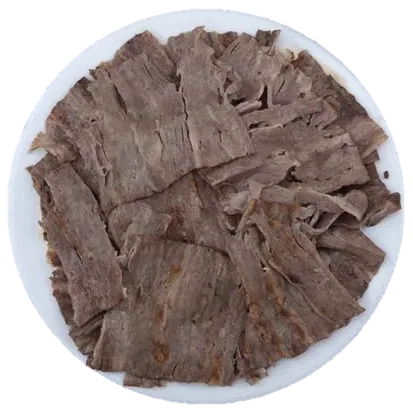
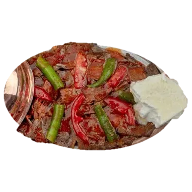
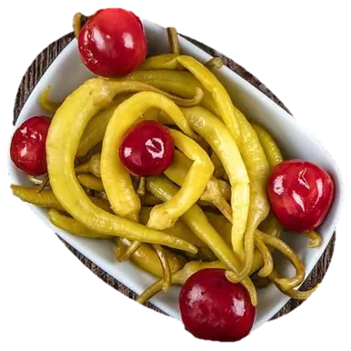
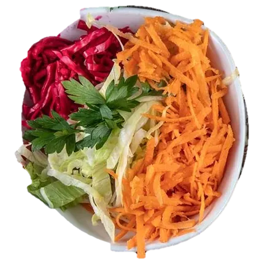
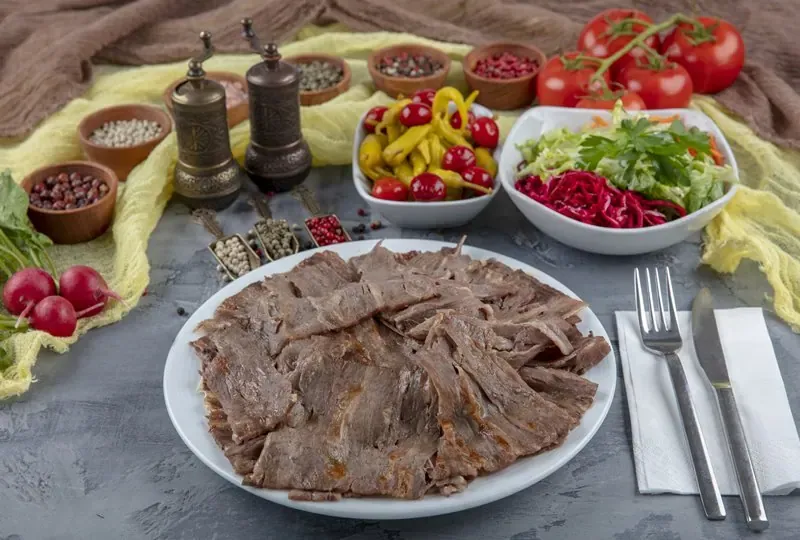
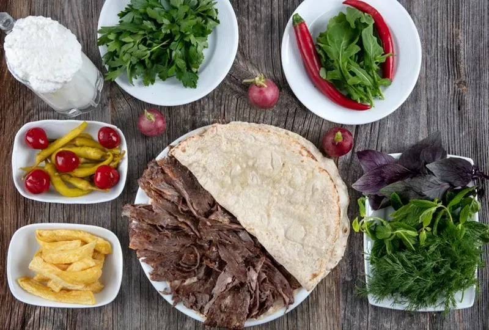

Mekan Közde Döner
680 ₺
120 gr
Üsküdar'da közde döner
Közde döner, iskender ve yan lezzetler, sitedeki menüden.

680 ₺
120 gr

780 ₺
120 gr

120 ₺
1 porsiyon

130 ₺
Bildiğimiz işe odaklandık ve misafirlerimize yalnızca döner sunmaya karar verdik.
Dönerimizi köz ateşinde pişiriyoruz. Lavaşımızı da elde açıp tandırda, odun ateşinde pişiriyoruz.
Mekan Közde Döner
| Pazartesi | 08:00–22:30 |
|---|---|
| Salı | 08:00–22:30 |
| Çarşamba | 08:00–22:30 |
| Perşembe | 08:00–22:30 |
| Cuma | 08:00–22:30 |
| Cumartesi | 08:00–22:30 |
| Pazar | 08:00–22:30 |
Yakında Ümraniye, Esenevler'deki yeni adresimize taşınıyoruz.
